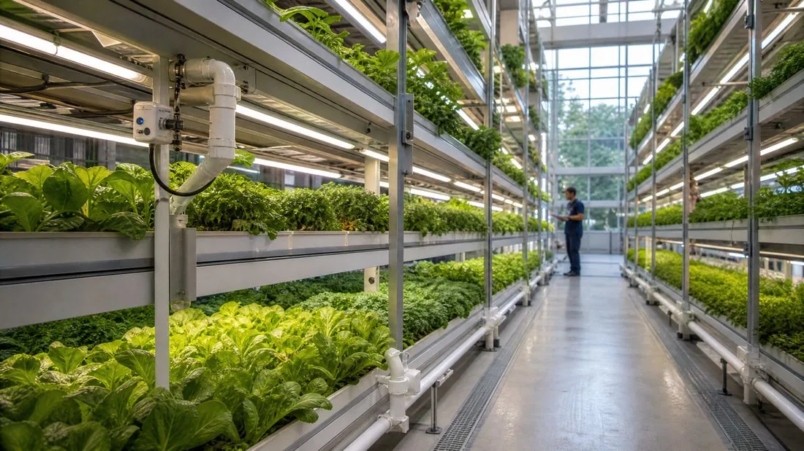
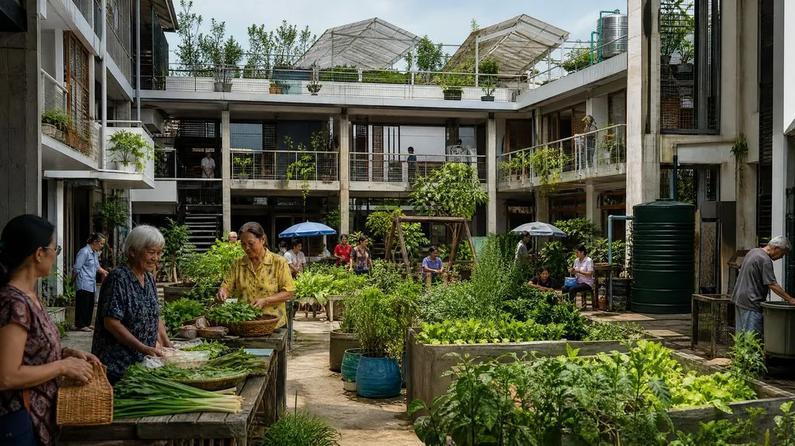

บทความ
สถาปัตยกรรมและความมั่นคงทางอาหาร

เมื่อเผชิญกับการขยายตัวของเมืองอย่างรวดเร็วและการหยุดชะงักของห่วงโซ่อุปทานซ้ำๆ เมืองไม่อาจเป็นเพียงผู้บริโภคทรัพยากรอาหารได้อีกต่อไป เกษตรกรรมที่ผสานเข้ากับอาคารกำลังกลายเป็นองค์ประกอบเชิงกลยุทธ์ของการออกแบบสถาปัตยกรรมร่วมสมัย การเปลี่ยนโครงสร้างอาคารให้เป็นฟาร์มแนวตั้งที่ให้ผลผลิต คือการมีส่วนร่วมอย่างจริงจังในความมั่นคงทางอาหารของผู้อยู่อาศัย กระจายกำลังเพิ่มประสิทธิภาพด้านพลังงานของอาคาร
ฟาร์มแนวตั้ง : หน้าที่ใหม่ของโปรแกรมอาคาร
การผสานเกษตรกรรมเข้ากับโครงการไม่ใช่ทางเลือกด้านความสวยงามอีกต่อไป แต่กลายเป็นหน้าที่หนึ่งอย่างเต็มตัว เทียบเท่ากับสำนักงานหรือที่พักอาศัย เทคโนโลยีไฮโดรโปนิกส์ แอโรโปนิกส์ และอควาโปนิกส์ช่วยให้เกิดประสิทธิภาพเชิงพื้นที่อย่างที่ไม่เคยมีมาก่อน ตัวอาคารเองกลายเป็นทรัพยากรสำหรับการเพาะปลูก
ประสิทธิภาพและผลผลิต : เกษตรแม่นยำ
ด้วยอินเทอร์เน็ตของสรรพสิ่งและปัญญาประดิษฐ์ ฟาร์มแนวตั้งที่ผสานกับอาคารเข้าถึงระดับความแม่นยำที่ไม่เคยมีมาก่อน ระบบเหล่านี้ขับเคลื่อนด้วยพลังงานหมุนเวียน ช่วยลดผลกระทบต่อสภาพภูมิอากาศของการผลิตอาหารได้อย่างมาก

ผลกระทบทางสังคมและเมือง : สู่ย่านที่หล่อเลี้ยงชุมชน
นอกเหนือจากการผลิต สถาปัตยกรรมเชิงอาหารยังเปลี่ยนแปลงชีวิตทางสังคมของย่านต่างๆ ในกรุงเทพฯ หลายโครงการผสานฟาร์มแนวตั้งเข้ากับที่พักอาศัยหลายรุ่น ส่งเสริมการแบ่งปันความรู้และการเข้าถึงอาหารสดอย่างเท่าเทียม

บทสรุป
การผสานเกษตรกรรมเมืองแนวตั้งเข้ากับสถาปัตยกรรมคือการให้กำเนิดอาคารเชิงเมตาบอลิซึม ที่ผลิตบางส่วนของสิ่งที่บริโภคและรีไซเกิลกระแสของตัวเอง วิวัฒนาการนี้ไม่ใช่แค่เรื่องเทคนิค แต่เป็นเรื่องจริยธรรม มันนำการผลิตที่สำคัญกลับมาสู่ใจกลางของพื้นที่อยู่อาศัย และทำให้สถาปนิกทุกคนเป็นผู้มีบทบาทด้านอธิปไตยทางอาหารแห่งอนาคต